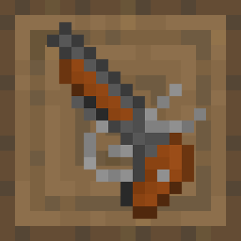
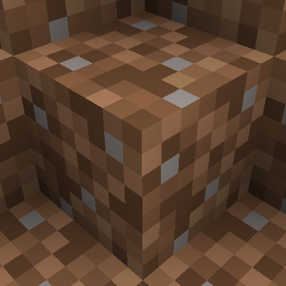

Easy Guns [By: Lawreel] A small mod containing some guns and ammo, along with a villager profession

Super Sky Survival [By: Bananapantz] Super Sky Survival creates a better format to play with Superflat Survival but as a Skyblock World instead. You are able to beat the entire game in this basic no-structures-based Skyblock world (Offical fork of Superflat Survival)